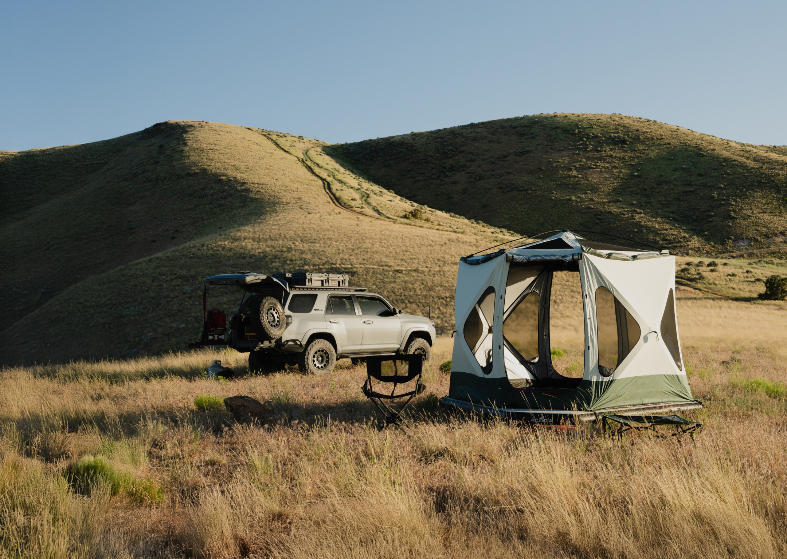
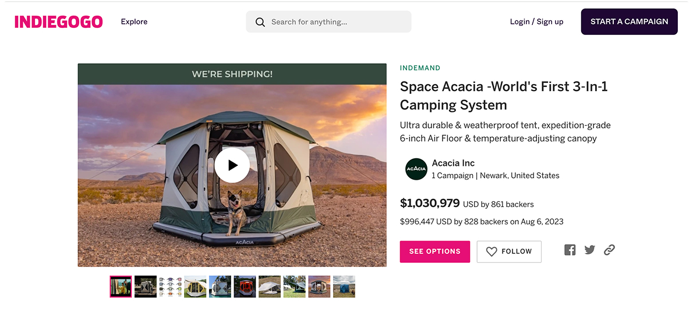
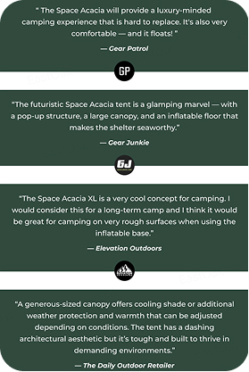
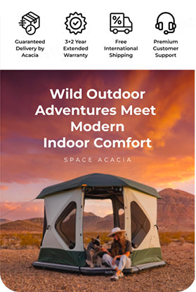
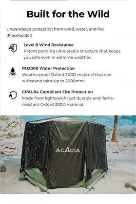
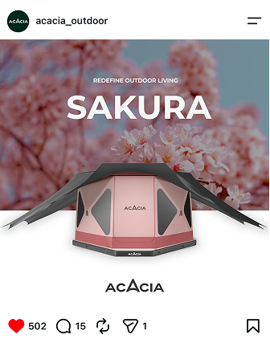
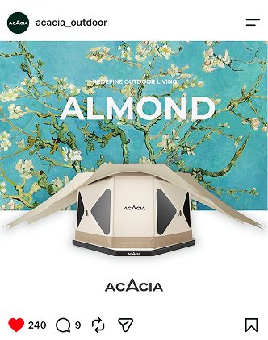
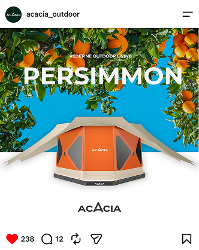
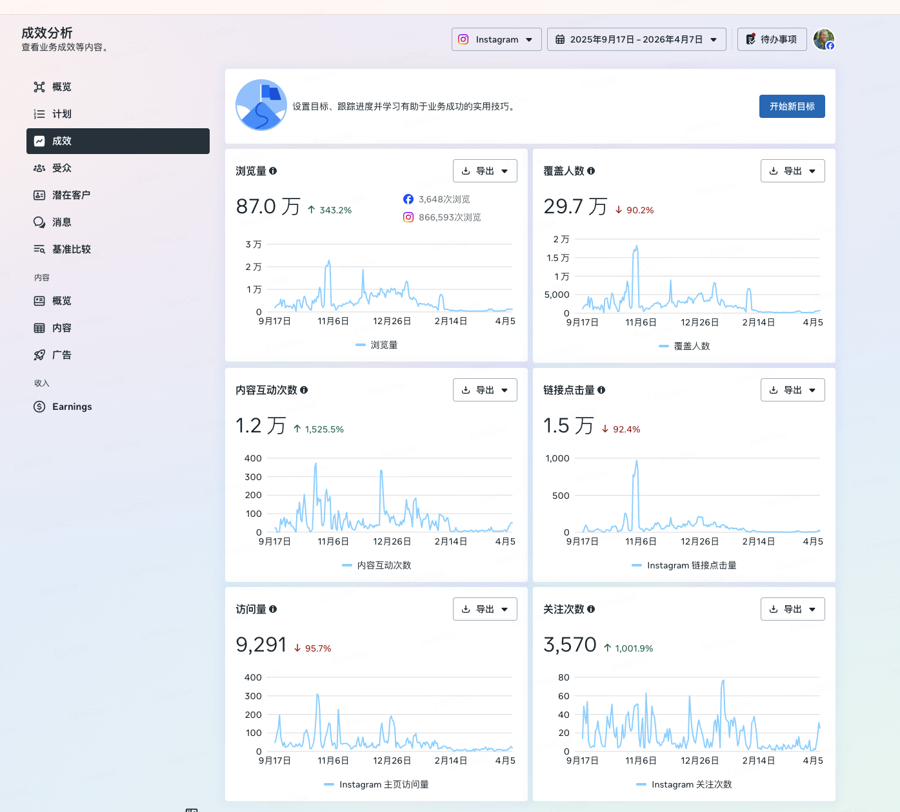

产品与使用体验
组件关系、功能特点、使用方式与说明信息。
需要说清：产品是什么，怎么使用。BRAND · CROWDFUNDING · DTC
从品牌建立，到众筹与独立站
ACACIA 是一套 3-in-1 户外产品。项目开始时，品牌还没有知名度，产品组合也需要解释。我从品牌建立阶段深度参与，与产品、市场和内容团队一起梳理产品价值，将品牌方向落实到视觉识别、产品说明、众筹内容与后续独立站。
我的职责品牌定义与视觉识别 · 众筹内容 · 网站设计

PROJECT SNAPSHOT
[BRAND → DTC]
MY ROLE · BRAND & CROSS-TEAM COLLABORATION
ACACIA 从零建立品牌，首先要明确的是：如何让用户理解 3-in-1 产品组合，以及品牌希望传达怎样的户外体验。我参与品牌方向的建立，也把不同团队的信息整理成统一的产品说明、视觉规范和发布内容。
组件关系、功能特点、使用方式与说明信息。
需要说清：产品是什么，怎么使用。参与品牌定义，建立 Logo、色彩、字体与应用规范。
需要明确：希望用户形成怎样的认知。媒体沟通、社媒内容，以及众筹方案与关键信息。
需要对齐：各渠道向用户传达什么。围绕同一套产品价值，梳理说明内容、建立视觉规则，整合实拍、视频与渲染资源；与相关团队确认后，延展到不同渠道。
通过 Media Kit 和场景内容，帮助媒体与用户理解产品特点。
组织功能、场景、回报方案与保障信息，支持购买判断。
将产品问题转成清晰的图示，延续项目进展与成果传播。
支持者问题与反馈 → 补充产品解释与沟通内容
共同交付的基础
我的工作贯穿品牌建立、预热、众筹上线与后续维护：让产品说明、品牌视觉和营销内容能够互相衔接。产品、市场与内容团队共同推动众筹结果，我承担其中的品牌与设计协同。
01 · BRAND FOUNDATION
除了 Logo、色彩、字体、包装和摄影方向，我还梳理了产品说明书、玩法手册与 Media Kit。它们分别用于说明组件关系、展示使用方式，以及向媒体介绍产品。
同一套产品信息用于众筹、社媒和网站，避免不同渠道各讲一套。


02 · CROWDFUNDING LAUNCH
发布前，团队用 Media Kit 对接媒体，预寄产品给 KOL 制作体验视频，并通过社媒预热和广告扩大触达。我围绕这些渠道整理产品内容和视觉素材。
众筹页面依次说明产品能做什么、如何组合，以及不同回报方案包含哪些内容，再补充性能、测评和保障信息。
团队众筹结果
我的贡献参与品牌建立，连接产品信息与营销需求，完成品牌视觉、产品说明和众筹叙事，让页面、媒体及社媒使用一致的表达。
团队成绩众筹由产品、市场与内容等团队共同推进；下方保留 Indiegogo 页面记录。







03 · DTC WEBSITE
我将发布阶段积累的内容整理为 16 个 DTC 页面。首页介绍品牌与产品组合，Collection 帮助用户缩小选择范围，PDP 说明规格、配件和购买选项。
网站继续使用场景图、测评和保障信息辅助选择；团队也在 Facebook 社群中维护已有用户。
后续阶段 · 独立站 1.5 升级
对接需求，将产品与营销信息整理为页面结构和 UX 方案。
明确 UI、交互及功能细节，与需求方和开发核对理解。
准备素材并对接内容团队，将页面内容配置到 Shopify。
辅助测试、反馈问题，配合开发修复并推进上线。
在营销节点前完成桌面与移动端设计，并与团队协同上线。
AUTO SCROLL
可在框内滚动查看完整页面；手动操作时暂停自动浏览。

04 · SOCIAL MEDIA
从品牌发布，到持续的社媒运营。
我在品牌与网站工作之外，也负责 ACACIA 的社媒运营。以下为负责运营期间的 Instagram 表现。
2025.09.17—2026.04.07负责社媒运营期间 · Instagram
来源：Meta 成效分析。浏览量采用 Instagram 单平台数据；数字按截图四舍五入展示，未区分自然与付费流量。
查看后台数据记录 ＋
